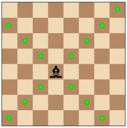

What is chess?
Chess is a strategy game played between two players on a checkered board with 64 squares, arranged in a eight-by-eight square, also known as the chess board. Each player's piece is either black or white. White moves first, after which the players take alternate turns in accordance with fixed rules. The object of the game is to checkmate the opponent's king, whereby the king is under immediate attack (in "check") and there is no way to remove it from attack on the next move.
Pieces
Chess Set
Diagram showing the initial position of a chess game:
There are 32 pieces in a normal chess set, half for white and half for black. Each colour has six kinds of pieces in chess: the king, the queen, the rook, the bishop, the knight, and the pawn.
Pawn

The pawn is aruguably the least powerful piece in chess, however, it can promote to any other piece (except the king) when advanced all the way to the opposite side of the board.
Setup
The eight pawns are set on rows two (for white) and seven (for black).
Movement
Unlike all the pieces, the pawns are unable to move backwards. Normally, pawns moves a single square forward, but the first time a pawn is moved from its starting position, it has the choice of moving two squares. If a pawn wants to capture a piece, it can only do so by diagonally moving one square, any pieces in front will simply block them from advancing any further.
Bishop
Setup

The Bishop is placed on the third column and sixth column of the first (for white) and eighth (for black) row.
Movement

The bishop has no restrictions for the distance of each move, but is limited to diagonal movement. Bishops are unable to jump over pieces. Bishops capture pieces by occupying the square on which an enemy piece is.
Knight
Setup
Knights are placed on the first (for white) and eighth (for black) row, on the second and seventh column.
Movement

The Knight has the most unusual moves. When it moves, it can move two squares horizontally (or vertically) and one square vertically (or horizontally). Therefore, the complete move looks like an 'L'. Unlike all other pieces, the knight has an ability of jumping over other pieces of any colour. It captures by moving in the square on which an enemy piece is.
Rook
Setup
Rooks are set on the first (for white) and eighth (for black) row, on the first and eight column.
Movement

The rooks moves horizontally or vertically either forward or backward for any number of squares. Like other pieces, it captures by moving in the square on which an enemy piece is. The rook also participates, along with the king, in a special move called castling.
Queen
Setup
The Queens are placed on the first (for white) and eighth (for black) row and on the fourth column.
Movement
The Queen is said to be the most powerful piece because it can be moved any number of unoccupied squares in a straight line vertically, horizontally, and even diagonally. Thus, the Queen is like a combination of a rook and bishop. However, it cannot jump over a piece like the Knight. It captures a piece by moving in the square on which an enemy piece is.
King
Setup
The Kings are placed on the first (for white) and eighth (for black) row and on the fifth column.
Movement
The King is the most important but vulnerable piece in the game of Chess. It can move one square in any direction. It captures by moving onto a square occupied by an enemy piece.
Check and Checkmate
A check is a direct threat to capture the king. A king threatened by another piece to said to be in 'check'. In the following move, the player whose king is in check must get the king out of check, if it's possible. However, if the king is in check and no legal moves are possible to get out of check, the king is said to be 'checkmated' and the game is over. The play whose king gets checkmated loses and the opposing player wins.
Material Values
Deciding who is "winning" or "losing" in chess cannot be left to the number of pieces on the board. Each piece has a distinct value, measured in centipawns. It is worthy to note that calculations of the value of the pieces provide only a rough idea of the state of the game. The exact piece values will vary between situations. In some games, even people with more material values get checkmated. These are the usual values of pieces:
| Piece | Value |
|---|---|
| King | None |
| Queen | 9 |
| Rook | 5 |
| Bishop | 3 |
| Knight | 3 |
| Pawn | 1 |
History

Chess originated in Ancient India about 1,400 years ago, as this was the earliest finding of chess pieces. "Chaturanga" was the name of the ancient chess game that the people of Ancient India played. When Buddhists came as missionaries to India, they took the game with them and Chatarunga continued to move through other countries, sometimes having its name changed. When the game became widespread in Persia, it was named "chatrang". When the Arabs conquered Persia, they renamed the game to "Shatrang". The game then became widspread across Western Europe. During the European age of shatrang, its rules were changed: the queen and bishop was added, and the rule of promotion was also added to enhance the excitement of the game. This game then become very popular across the globe.
Chess Game Example
Now that you know the rules of chess, here is a video of a simple chess game.